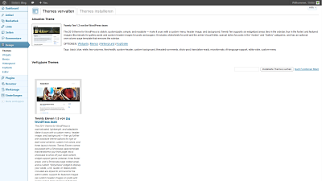
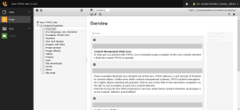
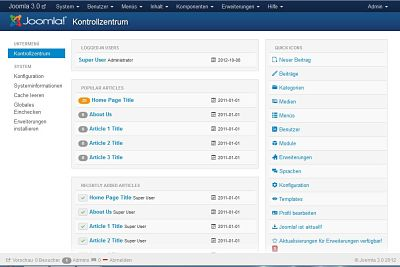

Wordpress

WordPress ist eine freie Software zur Verwaltung der Inhalte einer Website
(Texte und Bilder). Sie bietet sich besonders zum Aufbau und zur Pflege eines
Weblogs an, da sie jeden Beitrag einer oder mehreren frei erstellbaren Kategorien
zuweisen kann und dazu automatisch die entsprechenden Navigationselemente erzeugt.
Parallel kann WordPress auch hierarchische Seiten verwalten und gestattet den
Einsatz als Content-Management-System.
Weiter bietet das System Leserkommentare mit der Möglichkeit, diese vor der
Veröffentlichung erst zu prüfen, sowie eine zentrale Linkverwaltung, eine Verwaltung
der Benutzerrollen und -rechte und die Möglichkeit externer Plug-ins, womit
WordPress in Richtung eines vollwertigen CMS ausgebaut werden kann.
WordPress basiert auf der Skriptsprache PHP (mindestens PHP 5.2.4) und benötigt eine
MySQL-Datenbank (mindestens MySQL 5.0.15). Es ist freie Software, die unter der GNU
General Public License (GPLv2) lizenziert wurde. Laut Aussage der Entwickler legt
das System besonderen Wert auf Webstandards, Eleganz, Benutzerfreundlichkeit und
leichte Anpassbarkeit. WordPress entstand auf Basis der Software b2 und hat eine
stetig wachsende Benutzer- und Entwicklergemeinde.
Link zur deutschen Webpräsenz von Wordpress
Typo3

TYPO3 ist ein freies Content-Management-Framework für Internetseiten, das seit
Oktober 2012 offiziell unter dem Namen TYPO3 CMS angeboten wird. Ursprünglich wurde
TYPO3 von Kasper Skårhøj entwickelt.
TYPO3 basiert auf der Skriptsprache PHP. Als Datenbank kann MySQL oder MariaDB, aber
auch PostgreSQL oder Oracle eingesetzt werden.
TYPO3 wird von zwei Kernentwicklungsteams beständig weiterentwickelt. Ein Team kümmert
sich um das "TYPO3 CMS", das andere um das neuere "TYPO3 Neos". Die markenrechtlich
geschützte Marke TYPO3 dient zudem seit Oktober 2012 als Heimat für eine Reihe weiterer
Produkte.
Zahlreiche Funktionen von TYPO3 können mit Erweiterungen[4] integriert werden, ohne dass
ein eigener Programmcode geschrieben werden muss. Die derzeit über 5000 Erweiterungen
stammen zum größten Teil von Fremdanbietern und sind kostenlos verfügbar. Erhältlich
sind unter anderem Erweiterungen für News, Shop-Systeme oder Diskussionsforen. Das
System ist auf Mehrsprachigkeit ausgelegt und wird von einer Anwender- und
Entwicklergemeinde aus aller Welt betreut. TYPO3 gehört zusammen mit Drupal, Joomla und
WordPress zu den bekanntesten Content-Management-Systemen aus dem Bereich der freien
Software und wird im deutschen Sprachraum besonders häufig eingesetzt.
Link zur Webpräsenz von Typo3
Joomla

Joomla ([ʤuːmlə], Eigenschreibweise Joomla!) ist ein verbreitetes freies
Content-Management-System (CMS) zur Erstellung von Webseiten. Joomla steht unter der
GNU General Public License. Es ist in PHP 5 geschrieben und verwendet MySQL als
Datenbank.
Zusammen mit WordPress, TYPO3, Contao und Drupal gehört es zu den bekanntesten und
meistverwendeten Open-Source-Content-Management-Systemen. Historisch ist Joomla aus dem
Open-Source-Projekt Mambo hervorgegangen.
Link zur deutschen Webpräsenz von Joomla
{kind=link}
{kind=link}
{kind=link}